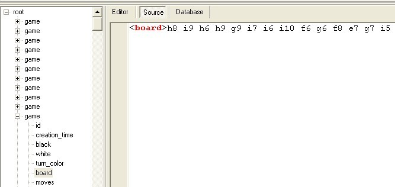
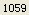

哪位大师可以把俄罗斯慢棋XML棋谱批量LIB啊?
首页
五子棋交流
#1 哪位大师可以把俄罗斯慢棋XML棋谱批量LIB啊? 作者：极地剑客 发表时间：2009-12-11 7:46:49

#2 Re:哪位大师可以把俄罗斯慢棋XML棋谱批量LIB啊? 作者：水月 发表时间：2009-12-11 10:15:01
主要是我不懂lib格式。。。看不明白～
你可以转成sgf格式，然后用lib合并。
#3 Re:哪位大师可以把俄罗斯慢棋XML棋谱批量LIB啊? 作者：小丸.net 发表时间：2009-12-11 12:23:10
做是可以做，但是俄国人的名字有很多乱码，不太好处理．
#4 Re:哪位大师可以把俄罗斯慢棋XML棋谱批量LIB啊? 作者：水月 发表时间：2009-12-11 14:15:34
小丸。。。统一utf8可以么？
我现在写东西全部都是utf8了
#5 Re:哪位大师可以把俄罗斯慢棋XML棋谱批量LIB啊? 作者：aabb 发表时间：2009-12-12 16:50:44
请问下楼主，XML用什么软件打开的？
#6 Re:哪位大师可以把俄罗斯慢棋XML棋谱批量LIB啊? 作者：忧郁的双眼 发表时间：2009-12-12 17:59:59
用俄罗斯慢棋系统可以打开
#7 Re:Re:哪位大师可以把俄罗斯慢棋XML棋谱批量LIB啊? 作者：极地剑客 发表时间：2009-12-14 6:10:40
引用：
原文由 aabb 发表于 2009-12-12 16:50:44 :
请问下楼主，XML用什么软件打开的？
用xml编辑器
但是一个一个看着累，20m。。。。
#8 Re:哪位大师可以把俄罗斯慢棋XML棋谱批量LIB啊? 作者：水月 发表时间：2009-12-14 15:12:47
额。。。这个xml能发给我么？或者这个xml在哪里能下载到？
xsir317@163.com
#9 Re:哪位大师可以把俄罗斯慢棋XML棋谱批量LIB啊? 作者：极地剑客 发表时间：2010-7-25 15:20:53
数据库已搞定~100万对局啊~慢慢看~
#10 Re:哪位大师可以把俄罗斯慢棋XML棋谱批量LIB啊? 作者：极地剑客 发表时间：2010-7-25 15:27:12
查到偶像JINZHIYUYE大师1059局~赶快学习一下~
另外据百度五子棋贴吧说国内07年左右早有blackstone4.0版程序?谁共享发出个安装程序破解一下~
另寻俄罗斯慢棋及世界EM战高手名单一份~
［此帖子已被 极地剑客 在 2010-7-25 15:30:39 编辑过］
#11 Re:哪位大师可以把俄罗斯慢棋XML棋谱批量LIB啊? 作者：aabb 发表时间：2010-7-25 18:23:46
同求4.0.。